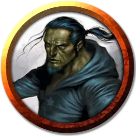

Грум’шар
Grum’shar
Средний Гуманоид (Полуорк), хаотично-злой, именной НИП

Класс Доспеха 10
Хиты 9 (2к8)
Скорость 30 футов
| мод | спас | ||
|---|---|---|---|
| СИЛ | 10 | +0 | +0 |
| ЛОВ | 10 | +0 | +0 |
| ТЕЛ | 10 | +0 | +0 |
| мод | спас | ||
|---|---|---|---|
| ИНТ | 14 | +2 | +2 |
| МДР | 10 | +0 | +0 |
| ХАР | 11 | +0 | +0 |
Навыки История +4, Магия +4
Чувства тёмное зрение 60 футов, пассивное Восприятие 10
Языки Общий, Орочий
Опасность 1/4 (50 опыта)
Бонус мастерства +2
Особенности
Непоколебимая стойкость. Если хиты Грум’шара опускаются до нуля, но при этом он не убит, его хиты вместо этого опускаются до 1. Он не можете использовать это умение снова, пока не закончит продолжительный отдых.
Врождённое колдовство. . Грум’шар является заклинателем 1-го уровня. Его базовой характеристикой является Интеллект (Сл спасброска от заклинания 12, +4 к попаданию атаками заклинаниями). У него подготовлены следующие заклинания волшебника:
• Заговоры (неограниченно): огненный снаряд, починка, фокусы.
• 1 уровень (2 ячейки): огненные ладони, маскировка, щит.
Действия
Кинжал. . Рукопашная или дальнобойная атака оружием: +2 к попаданию, досягаемость 5 футов или дистанция 20/60 футов, одна цель. Попадание: Колющий урон 2 (1к4).
Описание
Полуорк Грум’шар — низший босс Гильдии Занатара. Как только его приспешники нашли того, кого они считали Ренаэром Неверэмбером, полуорк попросил Нихилура позволить ему стать свидетелем допроса пленного, не понимая, что он ошибся в личности пленника.